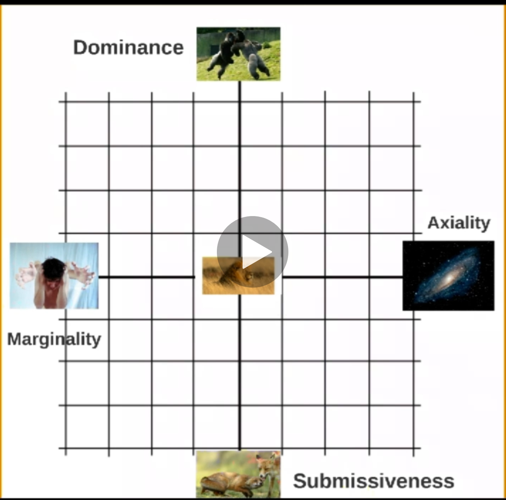

Z Non Security¶
Non-security related content here!
Parenting¶
Neuroscience for Parenting¶
Oxytocin- Love hormone responsible of reorganizing neurons while parenting- Also responsible of
Us vs Thembehavior - In-group and out-group dynamics
- Feeling part of a group (protect a group)
- Also responsible of
The Reptilian Brain¶
- Survival of individual
- When active: People act in treat stress mode
- Active when there is danger / perceived danger
- Responsible of dealing with life threatening situations
- Works closely with
limbic amygdala - Three ways of responding to a threat:
- Flee
- Lead to love, movement and change
- Fight
- Lead to challenges and winning
- Freeze
- Lead to sharing and caring
- Standby - Active even where there is no active danger
- Lead to contemplation and thinking
- Flee
- Reptilian Brain also gets activated when life is not in danger
- Stress - Defense mechanism to a persevered danger
- When feeling stresses
- Flee -> Anxiety
- Fight -> Aggressively
- Freeze -> Helplessness
- Reptilian Baby
- During first 3 months, 90% of neural connections are disappeared based on surrounding
- For a newborns slightest discomfort will trigger
Reptilian Brain(life threatening) - For a baby cry is the only action but could be due to, Flee, Fight or Freeze:
- Before 2-years, given them what they want
Prefrontal brainis responsible of Handling emotional pain- 17 years + development to avoid humiliation
- 24 years + to fully develop
- To handle stress of children - Show that you are on their side
- Flee
- Movement and avoid confrontation
- Solution: Give options
- Solution: Humor
- Movement and avoid confrontation
- Fight
- Overpowering and winning
- Solution: Share outrage
- Solution: If kid is upset due to something you did, acknowledge feeling
- "I understand you are angry right now"
- "You have right to be upset"
- Overpowering and winning
- Freeze
- Looking for protection (ex: tears / not-doing-anything)
- Solution: Offer support
- Solution: Be there
- Looking for protection (ex: tears / not-doing-anything)
- Common Solution: Offer a hug (tell if they want a hug they can have it later)
- Releases
oxytocin. Bonding hormone. - Fight stress is defensive aggression, which happens when
Reptilian Brainis active.
- Releases
- Flee
- Movement
- Main purpose of brain is to facilitate movement
- 50% of neurons are from
Cerebellumis responsible of coordination of movement - This is the part of brain mostly grown at first 3 months of a newborns
- Hence, movement is key to development of a child
- Climbing, balancing, obstacle avoidance increase the brain growth (any activity that require constant attention on what uld happen next)
- Food
- Sense of hunger is gen by
hypothalamus - Brain is 73% water
- 60% of remaining 28% is fat
- Highest quality fat is:
Omega 3, can be found in:fatty fish(salmon, sadin)- Nuts
- Milk and eggs (natural ones)
- Sense of hunger is gen by
- Sleep
- Own bed rule
- Co-sleeping is important
Paleolimbic Brain¶
- Survival of group
- When active: People act in very territorial way
- Tries to impress and intimidate
- Unconscious scripts inherited from education which regulates life
- Responsible of:
- Self-confidence
- Too-much: Dominance - Think of himself as superior to others
- Too-less: Submissiveness - Causes melancholic depression
- Trust
- Too-much: Axiality - Results in gullibility
- Too-less: Marginality 
- Self-confidence
limbic amygdalais responsible of parental instincts and territorial power games related to protecting kids- Ex: Fight with much larger predators when offspring is in danger
- When someone is in this mode, better to let him calm down. No point of talking.
- Paleolimbic Toddler
- Paleolimbic brain activated at 2 / 2.5 + years
- (Start playing together as a group)
- Power-struggle and test others to see how long they can go
- Don't start explaining things
- No hugs / No nice guy
- Show you are in charge at these situations
- Let your kid win time to time, but with non-important things
- Let kid learn consequences of their actions
- Discipline the child and let them know they cannot do whatever they want
- However, too much discipline is wrong and will become submissive
- Don't threaten with a punishment and then not do it (don't reward for not complying)
- Once 4 years + - make sure rules of the house is clearly defined (however, they will still test the limits)
- Fluctuations of self-confidence stops only after 12 + years
- Bullying
- Is a dominant Paleolimbic behavior
- Do role playing and teach child how to say "No no no" in bullying situations
- Get bully to become a friend
Neolimbic Brain¶
- Home to deepest motivations and raw emotions
- Where memory resides
- Identify situation and come-up with procedures to handle it
- Highly efficient and free-up minimum required attention span to carry out a task. Hence, free-up mind to do multiple things at the same time (Drive and talk).
- 3 layers of motivation
- Intrinsic motivations
- After 3 months will remain same throughout life
- Could lead to 8 different personality types
- Motivates you regardless of whether you like what you do
- Extrinsic Motivations
- Not fixed
- Likes and dislikes
- Blueprint of cultural influences (socially expectable)
- Motivates you only if you like what you do (won't last forever)
- Example: Motivation from a raise last 3 - 6 months
- Obsessions
- Passion that has gone over its tipping point
- When obsessed we are not just free (never satisfied of what you do towards the subject of the obsession)
- Intrinsic motivations
- Expectations
The Pygmalion Effect- How we think about others will influence how they perform- Give list of high potential students (chosen just randomly) to a lecturer and measure success of students.
The Gollem Effect- Negative expectations lead to negative outcomes- Even when we try to hide our inner expectations, kids will pick those up from other signs
- Expecting too much -> lead to raising insecure adults (with attachment issues)
- Kids will feel that: if kids do not perform as expected, they do not deserve our love
- No expectations -> lead to brats who do not know how to stand up for themselves
Focus on efforts not results- Actions
- Discuss with your kids
- Setup rules together
- Challenge them
- Look at the kids with love, compassion and pride. Look at their potential
- You way of looking at them shapes who they will become
- Punishments and reward
- Never make a threat you will not act upon. This will damage your authority.
- Types of punishments
- Removing a toy
- Timeout
- Being grounded
- Rules
- Consequences have to be clear and accepted/agreed
- If X happens what should be the consequences? Let them decide.
- Transgressions should always have consequences
- No punishment = reward
- No drama
- Explain what is the problem of doing X (Ex: wall paintings / fighting while driving)
- Ask from kid why he is doing X
- Give alternatives
- Talk in isolation (individually)
- Consequences have to be clear and accepted/agreed
- Parenting Styles
- Learned helplessness - By trying to make things easier in short term, we make things harder in long term
- We should help but not right away. Let them try, get frustrated.
- When child come to you, offer help. Next time, child will be able to solve the problem on their own.
- The Attachment Theory
- Kids require: Safety and Exploration
- Securely Attached
- Parents that are attuned to their desires.
- Kids will fel secure when parents are around.
- Avoidantly Attached
- Parents emotionally withdrawn. Child will learn to independently grow.
- Independent and mature. Fail to develop relationships with others. Not social.
- Ambivalent/disorganized attached
- Parents are inconsistent
- Kids are confused. Grow to be more fearful.
- Let kid explore. When a paint point arrives share a story where you also had a similar pain. Tell them it's normal to feel that way and it's part of the life. Tell them that you are there if they need you to.
- Personality
- Factors of
Reptilian Brain, experiences during newborn period affect personality. - Forcing kids to become what we want to become if counterproductive.
- Let children experience the life. Let them learn what they like. Fulfillment, Joy and Happiness is ultimate goal.
- Don't always reward or cheer too much. Doing so, yo might turn
intrinsic motivationintoextrinsic.
- Factors of
- Mindsets
- Fixed mindset - Focused on the result.
- Good grades is the focus.
- You avoid taking risks due to this focus.
- Growth mindset - Focused on the process
- Putting effort in there and experimenting.
- Enjoying the process (journey) and taking a challenge.
- Less stress. Doesn't affect relationship.
- Fixed mindset - Focused on the result.
- Complements
- Complements reenforce identity
- Praise the effort (not the end result)
- Don't say: You are the best / That's beautiful / You are smart
- Say: You worked hard / You applied yourself / You like to learn new things don't you?
- Don't overdo it.
- Brain get used to Dopamine rush
- Will need stronger incentives
- Kid will like the praising more than the activity itself
- Do not ridicule or joke about a child.
Prefrontal brainis not grown to handle this.
Prefrontal Brain¶
- Make humans unique: No other living creature has this structure the way we have it
- Using Reptilian and Paleolimbic brain -> No connection with local thinking ability
- Creating invocative solutions to the problem at hand
- Adaptation / Creativity
- Should be the one dealing with new and complex situations
- Not always the case.
Limbic brainmight be used in a situations wherePrefrontalshould be used. Example:Harry potter book was turned down by several publishersIdea of a personal computer
- Leads to resistance to change.
- Not always the case.
- Use all our knowledge and creativity to see a possible future and then say "yes" or "no".
- Might not be right decision
- Home to:
- creativity
- intuition
- spirituality
- adaptability
- WHen in use: we feel calmness and in full control.
- Remaining calm:
- Fast forward 10 years and think about it.
- Look at the situation and imagine how it could be worst. Will enable Prefrontal and disable amygdala.
- Learning
- Force kids to make mistakes. And let them learn from mistakes.
- Act of retrieving knowledge:
- The more knowledge is retrieved, stronger the pathway in brain becomes
- Let the kid do assignment on their own
- Revisit with him later
- Have them fail in the safe-environment and repeat until it's right.
- Sleep improves memory by at least 15%
- Adolescence
- 90% of full size by age of 6
- From age 12, go through re-wiring
- Adolescence is the adaptive period
- You should be there to support child's emotional needs (not the other way around)
- Be the safe-haven
- Age 24+ to fully mature brain
- In human nature to product a creature optimally primed to leave a safe home and move into unfamiliar territory
- Overcome fear of leaving safe world and take risks (and new allies)
Dopaminehelpsfast learning,takin risksOxytocinbounding hormone- Creates feeling of
usvsthem. - Creates hostility between you and teenager
- Creates feeling of
- In combination, creates a person:
- Very active socially and sharing new stuff with them
- Sensitive to peer pressure
- Teenagers weight reward and risk differently.
Dopaminemake reward look better. - Look at the attitude that drives the actions (not the results).
- Experimenting is not wrong.
- Actions
- Need framework and rules but flexible and evolving
- They will need independence to answer social needs
- If not give, Poleolimbic brain create a territorial battle
- Stay connected
- Put down rules (negotiate rules). You are not the enemy.
- Get their point of view and adjust the rules as required.
- Write consequences clearly.
- Sleep is important. Create rules around that.
- Language center mature at 13 years. After that we cannot pickup anything as a 2nd nature.
- Screentime
- Limit to less than 1-2 hours per day
- Less than 3 years non at all
- Due to:
- Gray matter atrophy
- Loss of white matter integrity
- Reduced cortical thickness
- Impaired cognitive function
Dopamineinstant gratification- A rush with each game win, or video you watch
- Kids never get this type of
dopaminerush in non-screen environment - Therefore everything else becomes dull, and make you unable to focus
- Humans are social animal by nature. Screen reduce social skills.
- Sleep deprivation. Blue light LED, which disrupt
melatonin. - Keep it controlled from the start.
- Grit
- Delayed gratifications (instant gratification was our nature because everyday could be the last)
- Growth mindset
- Love the process
- Be demanding.But not too much, which could lead to
Learned helplessness. - Be
Demanding yet Supportive. - Our brain evolved for
- instant gratification
- energy efficiency
Try Harder. Put them in control. It's in your hand.Perception of Control.
Common¶
- Submissiveness, Introversion and Shyness
- Submissiveness
- About obedience
- Part of Paleolimbic Brain
- Should be avoided
- Talk: Is your kid bullied kicked upon
- Introversion
- Character traits
- People who are introverted tend to be inward turning, or focused more on internal thoughts, feelings and moods rather than seeking out external stimulation.
- Part of Neolimbic Brain
- Talk: Is your kid like to be alone (introverted)
- Shyness
- About social fear
- Part of Reptilian Brain (freeze)
- Talk: Is your kid scared of others who he doesn't know
- Invite same age kids to home (one at a time)
- Introduce the kid to other one
- Ask other kid some questions and then involve your kid on answers
- Submissiveness
- Help delaying gratification
- When you promise something do it
- When they want something make them earn it
- Action means reaction
- There are consequences to actions
- Birth Order
- First Child - Parents have strong urge to do everything perfectly. More attention given by parents.
- Reliable
- Conscientious
- Structured Cautious
- Controlling
- Achievers
- Competitive mindset
- Second Child - Parents are bit relaxed. Have sense of having control. If different gender than the first, second child may have first child characteristics.
- People pleaser
- Somewhat rebellious
- Thrive on friendship
- Large social circle
- Peacemakers
- Last Child - Grab whole family attention. Hence 2nd child is left out.
- Fun loving
- Uncomplicated
- Manipulative
- Outgoing
- Attention seeker
- Self centered
- Only child becomes extreme
First Child. And also, mature to his age, perfectionists, conscientious, diligent, leaders.
- First Child - Parents have strong urge to do everything perfectly. More attention given by parents.
- Main pillars for healthy brain
- Sleep
- Movement
- Diet
- Grit
- Three golden rules
- Setup a framework (set of rules)
- Let them experiment without too much adult interventions
- Avoid public humiliations
- You are on their side. Take away the perceived danger.
- Communication on the level of emotions. Offer guidance.
Family Meetings¶
- https://centerforparentingeducation.org/library-of-articles/healthy-communication/holding-family-meetings/
- https://www.rootsofaction.com/family-meetings/
- plan weekly schedules/calendars so everyone knows what each person will need to do and what commitments have been made.
- share information that will effect family members.
- have fun together.
- make family decisions about vacations, recreation or other activities.
- It is truly an opportunity for your children to feel SEEN, HEARD, and UNDERSTOOD by you (since everyone is equal)
- Introducing Family Meetings to Children
- take time to introduce the concept to your children before you dive in
- you’ve recently learned how weekly meetings can benefit families by helping them communicate and solve problems together as a team
- Because family meetings work toward building consensus, everyone has a voice and a role in solving problems.
- Meeting time is also an opportunity to have fun, plan trips, organize family outings and service projects, and appreciate each other
- take time to introduce the concept to your children before you dive in
- specific problem
- Decide who is involved.
- Each person states his perspective and viewpoint about the problem.
- Ask each person for suggestions
- Write down the suggestions.
- Develop a plan of action.
- At the end of the session, set a time for a follow up meeting to evaluate
- Have a follow up meeting.
- make sure:
- Value everyone’s input.
- Treat all members as equals.
- Avoid letting one person dominates.
- Keep the family meeting short (no longer than 15 minutes).
- Using “I” Statements (over “You” statement)
- “I would like” (tell what you want to happen instead)
- to make it interesting
- include refreshments.
- include an opening activity that highlights positive family events or achievements or affirms individual family members.
- Example – best thing I did today, trait I like about myself, (or about someone else in family)
- set an agenda so that everyone knows what will be discussed.
- establish ground rules, such as:
- no interruptions
- no put downs
- everyone is listened to
- respect each other’s opinions
- everyone has a chance to contribute
- Sharing leadership
- Being flexible
- Keeping Minutes
- Family Meeting Agenda
- Open Meeting - with a poem, prayer, song, candle-lighting, etc.
- Appreciations - each family member to appreciate, say “thanks,” compliment, or acknowledge other members on positive things they noticed this week
- Discovery Time - learning together as a family
- Week in Review
- What worked well in our family this week?
- What went wrong in our family this week?
- What will we work on this coming week?
- Problem-Solving
- resolving problems or issues that individual family members have placed on the agenda
- try to solve only one problem a week
- Weekly Planning
- Trips, concerts, sports events
- chores
- Fun Activity - playing a game, watching a movie, or making pizza together

Power Struggle¶
- Misbehave to:
- Belong
- Feel loved
- feel powerful
- Feel valuable
- Feel like they have a place
- Experiment and explore
- Adlerian Psychology
- Misbehaving = Discouraged (from getting one of these needs met).
- Identify child's mistaken goals and provide a better way of getting to those.
- Mistaken Goals
- Attention
- Feel special and feel loved by keeping parent busy
- Parent Feel: Irritated, annoyed, frustrated, distracted, manipulated
- Power
- Parent Feel: Provoked, anger, challenged
- Revenge
- I feel hurt, hence I'm going to make you hurt
- Parent Feel: Hurt, mad, want to get even
- Avoidance
- Parent Feel: Feel sorry for child, despair, helpless coaxes or shows pity
- Attention
- Side Stepping the Power Struggle
Joy of OpposingwhenPower Strugglewith someone- Drop parent's end of tug of war by
stopping talking- Without disrespecting or doing something mean.
- Preventing Joy of Opposing
- Do not escalate your emotional response. (Example: Loud "no"s with each attempt)
- Respond like a broken record (repetition)
To play in garden, you are going to learn not to do X. And drop child in a different place, until child stop doing XRepetitionandRedirection. Cannot learn when in a power struggle - in stress (reptilian brain). Repetition help keeping prefrontal brain active and learn.
- Kind and Firm
- Find middle ground between kindness and firmness
- Better to be more firm than kind
- Given-in from time to time, but don't let them completely win power struggle.
Dance of Corporation
- How to Get Out of A Power Struggle
- Use loving guidance
- Words fuel power struggle. Use less words (no is better).
- Approach calmly. Use eye contact / non-verbal signals to give the message.
- Find useful ways for the child to feel valuable and powerful
- Example: Give his own drawer in kitchen for his stuff
- Teach them to say "no" respectfully
- If saying "no" was not an option, kids will find alternatives like arguing
- Offer choices
- Choices should be aged appropriately to let the kid feel empowered
-
- Concrete choices
- "Do you want to wear the red pants or the blue pants?"
-
- Choices with incentives
- "Do you want to go to bed now and I'll read you 3 stories or go to bed in 5 minutes and I'll read you one story?"
-
- Playful choices
- "Do you want to walk to bed or run to bed?"
-
- Immediate choices
- "Do you want to go to bed now or now?"
-
- Choices with consequences
- "You may play with the truck on the floor or choose a soft toy to play with on the table. If you run the truck on the table again, I will take the truck away."
- Do the unexpected
- Do something unexpected / fun to break the attention to power struggle
- Then get back to the original task. Don't let the kids get away
- Example: Dance before bed (when power struggling about bed time)
- Win/Win negotiate
- Flexible
- Usable with a child who does what he say he will
- Negotiate what happens if task is not done
- If child is not accountable with the negotiation, don't use this technique
- "I see that's a win for you and I want you to win. But I want to win too......"
- Let go of your position
- Listening to child
- Use a signal
- Let child make a signal (word of a sign) to start a task
- Example: "Broccoli" is the sign to "stop fighting"
- Use loving guidance
- Preventing Power Struggles
- Talk Less (use actions)
- Use One Word (in sing sung voice)
- Be firm and kind - and follow through
- Do what you say. Show that you mean the consequences.
- Say no in a friendly way
- That’s not an option
- I am unwilling...
- Say it in a funny way, i.e. "Never in a million trillion years!"
- Sing, no, no, no!
- That’s not appropriate.
- I am not ready for you to do that yet. (Great for teens)
- For a younger child, use distraction
- Ask, "What do you think you would need to do before I would be willing to say yes to that?"
- Ask, "What do you think? Is this a good choice for you?" (If you choose this, make sure you are willing to abide by her answer)
- For a youngster that has something you don’t want him to have say, "That’s not a toy."
- Ask, "What are your other options?"
- No, but I would be willing to...
- I appreciate your asking, however...
- Walls are not for coloring. Here is a piece of paper.
- Tell them what to do instead i.e., "Water needs to stay in the tub."
- This is not negotiable
- Let them have the last word
- Don't give in (and show that if forced enough you are ready to do something)
- Be patience and just wait until kid give up
- Catch them doing well and acknowledge them
- Little reward (ex: join and play with them) when doing well
- Let them know how valuable they are to you
- Ex: Appreciate a hug
- Make it fun
- Seek first to understand
- Don’t major in the minors
- Pick on the battles you can win
- If most things are flexible, kids tend to be more likely to comply with your major requests
- Use GEMS (Genuine Encounter Moments)
- See world through the child's eyes and be with him
- Take 3 minutes to 30 seconds to handle a GEM
- Let them feel: "What is important to me, is important to my parent"
- Cannot handle all GEMS. Hence, depending on importance of your work handle some.
- Options:
- Do a GEM
- Set temporary limit: It's OK to tell him to give 10 minutes. But make sure you'll be there by 10 minutes (Trust).
- Redirect the attention.